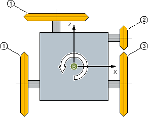
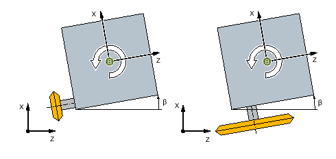
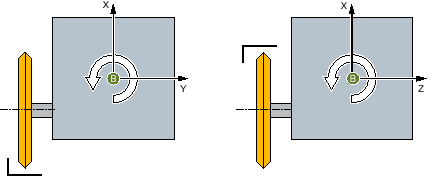

Cylindrical grinding machines with a B axis are supported by means of tool carriers.
① | External grinding wheel |
② | Internal grinding wheel |
③ | Face grinding wheel |
Example: Turret with four grinding spindles
Tool carrier
A separate tool carrier is set up for each grinding spindle. Each tool carrier has head kinematics with the B axis as the first rotary axis. A semiautomatic rotary axis in the direction of the grinding spindle is set up as the second rotary axis (value: 0° or 180°).
The respective basic position is determined via the offset angle of the B axis (e.g. 0°, 90°, 180°, 270°, arbitrary). If a spindle is mechanically at a slightly inclined angle to the 90° direction (e.g. 3°), then the direction vector of the second rotary axis is also entered accordingly (however, the direction component Y must be 0).
Select the appropriate tool carrier in the "T, S, M" window.
| | Machine manufacturer Please refer to the machine manufacturer's specifications. |
"Beta" alignment angle
You can define a skew angle in relation to the basic position with β.

Beta rotation (B axis)
Changing the cutting edge position
The second rotary axis is controlled with the aid of the "Machining opposite" selection box, and the cutting edge position is changed via the CUTMOD function (e.g. internal grinding).
Machining opposite = no | Machining opposite = yes |